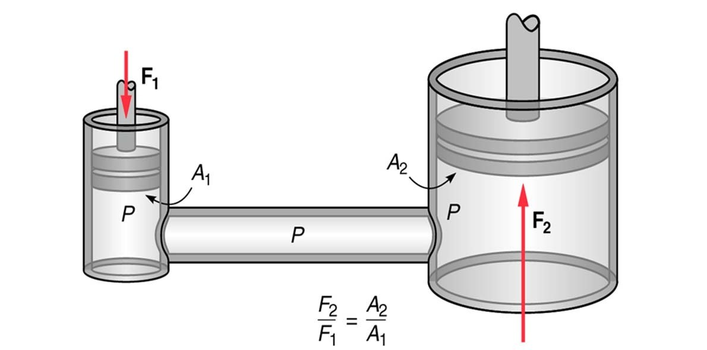
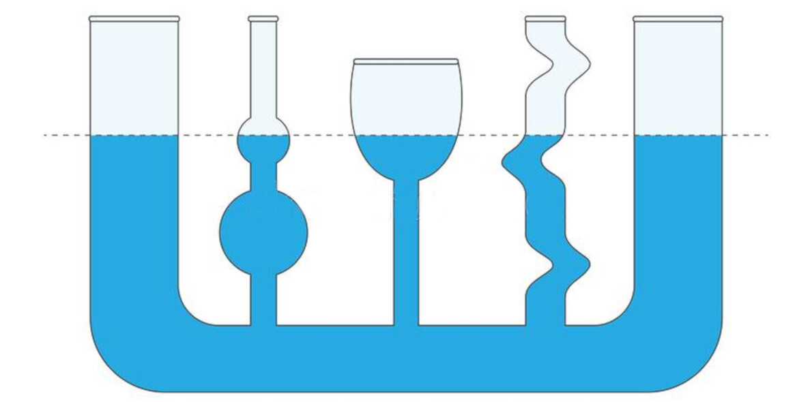

Folyadékok fizikájával foglalkozott a leginkább, beírta a nevét a hidrosztatikába. Róla lett elnevezve a nyomás mértékegysége.
Zárt térben lévő folyadékban vagy gázban a külső erő okozta nyomás minden irányban gyengítetlenül tovaterjed.
Közlekedőedényekben a nyugvó, egynemű folyadék minden ágban egyenlő magasságban van, feltéve, hogy az edény szárai nem túl szűkek.